Un chipset es el conjunto de circuitos integrados diseñados con base en la arquitectura de un procesador (en algunos casos, diseñados como parte integral de esa arquitectura), permitiendo que ese tipo de procesadores funcionen en una placa base. Sirven de puente de comunicación con el resto de componentes de la placa, como son la memoria, las tarjetas de expansión, los puertos USB, ratón, teclado, etc. Las placas base modernas suelen incluir dos integrados, denominados puente norte y puente sur, y suelen ser los circuitos integrados más grandes después de la GPU y el microprocesador. Las últimas placa base carecen de puente norte, ya que los procesadores de última generación lo llevan integrado.
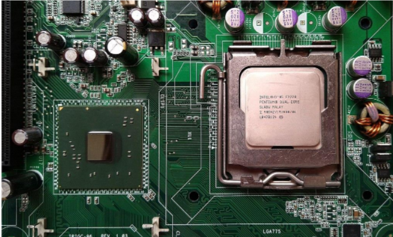Chipset Intel i45GC en conjunto con un procesador Pentium Dual-Core E2220 2.40 GHz. Historia. Desde los comienzos de la historia la fabricación de los primeros microprocesadores, se pensó en un conjunto de integrados de soporte, de hecho, el primer microprocesador de la historia, el Intel 4004 formaba parte de un conjunto de integrados numerados 4001, 4002 y 4003 que tenían todos una apariencia física similar y que formaban la base de un sistema de cómputo cualquiera. Mientras que otras plataformas usaban muy variadas combinaciones de chips de propósito general, los empleados en el Commodore 64 y la Familia Atari de 8 bits, incluso sus CPUs, solían ser diseños especializados para la plataforma, que no se encontraban en otros equipos electrónicos, por lo que se les comenzó a llamar chipsets. Este término se generalizó en la siguiente generación de computadores domésticos: el Commodore Amiga y el Atari ST son los equipos más potentes de los años 1990, y ambos tenían multitud de chips auxiliares que se encargaban del manejo de la memoria, el sonido, los gráficos o el control de unidades de almacenamiento masivo dejando a la CPU libre para otras tareas. En el Amiga sobre todo se diferenciaban las generaciones por el chipset utilizado en cada una.
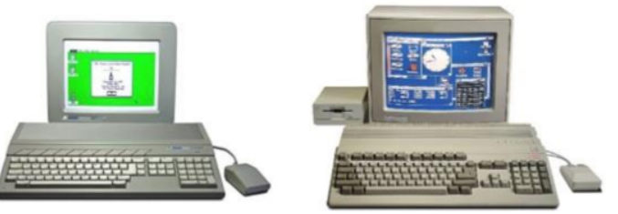Commodore Amiga y Atari ST. Funcionamiento El chipset es el que hace posible que la placa base funcione como eje del sistema, dando soporte a varios componentes e interconectándolos de forma que se comuniquen entre ellos haciendo uso de diversos buses. Es uno de los pocos elementos que tiene conexión directa con el procesador, gestiona la mayor parte de la información que entra y sale por el bus principal del procesador, del sistema de vídeo y muchas veces de la memoria RAM. En el caso de los computadores PC, es un esquema de arquitectura abierta que establece modularidad: el chipset debe tener interfaces estándar para los demás dispositivos. Esto permite escoger entre varios dispositivos estándar, por ejemplo, en el caso de los buses de expansión, algunas tarjetas madre pueden tener bus PCI-Express y soportar diversos tipos de tarjetas de distintos anchos de bus (1x, 8x, 16x).
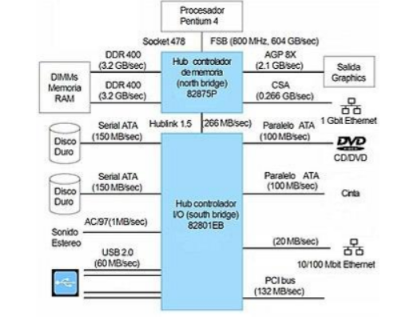Chipset 875 de Intel, usado con procesadores Pentium 4 en encapsulado de pines. La terminología de los integrados ha cambiado desde que se creó el concepto del chip-set a principio de los años 1990, pero todavía existe equivalencia haciendo algunas aclaraciones: Puente norte: northbridge, MCH (memory controller hub) o GMCH (graphic MCH), se usa como puente de enlace entre el microprocesador y la memoria. Controla las funciones de acceso hacia y entre el microprocesador, la memoria RAM, el puerto gráfico AGP o el PCI-Express de gráficos, y las comunicaciones con el puente sur. Al principio tenía también el control de PCI, pero esa funcionalidad ha pasado al puente sur. Puente sur: southbridge o ICH (input controller hub), controla los dispositivos asociados como son la controladora de discos IDE, puertos USB, FireWire, SATA, RAID, ranuras PCI, ranura AMR, ranura CNR, puertos infrarrojos, disquetera, LAN, PCI-Express 1x y una larga lista de todos los elementos que podamos imaginar integrados en la placa madre. Es el encargado de comunicar el procesador con el resto de los periféricos. 3.1.1 Unidad Central de Procesamiento (CPU). La unidad central de procesamiento (siglas en inglés Central Processing Unit) es el hardware dentro de una computadora u otros dispositivos programables. Su trabajo es interpretar las instrucciones de un programa informático mediante la realización de las operaciones básicas aritméticas, lógicas y externas (provenientes de la unidad de entrada/salida). Su diseño y avance ha variado notablemente desde su creación, aumentando su eficiencia y potencia, y reduciendo aspectos como el consumo de energía y el costo. Una computadora puede contener más de una CPU (multiprocesamiento). En la actualidad, los microprocesadores están constituidos por un único circuito integrado (chip) aunque existen los procesadores multinúcleo (varias CPU en un solo circuito integrado). Un circuito integrado que contiene una CPU también puede contener los dispositivos periféricos, y otros componentes de un sistema informático; similar a un microcontrolador (menos potente en RAM) se le denomina sistema en un chip (SoC). Los componentes de la CPU son: Unidad aritmético lógica (ALU): realiza operaciones aritméticas y lógicas. Unidad de control (CU): dirige el tráfico de información entre los registros de la CPU y conecta con la ALU las instrucciones extraídas de la memoria. Registros internos: no accesibles (de instrucción, de bus de datos y bus de dirección) y accesibles de uso específico (contador programa, puntero pila, acumulador, flags, etc.) o de uso general.
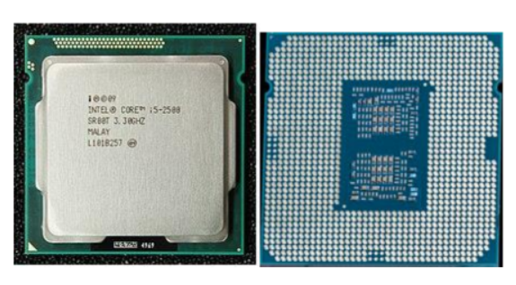3.1.2 Controlador del Bus. El controlador del bus se encarga de la frecuencia de funcionamiento y las señales de sincronismo, temporización y control. Está ubicado en un chip en la placa base. El bus es la vía a través de la que se van a transmitir y recibir todas las comunicaciones, tanto internas como externas, del sistema informático. El bus es solamente un dispositivo de transferencia de información entre los componentes conectados a él, no almacena información alguna en ningún momento. Los datos, en forma de señal eléctrica, sólo permanecen en el bus el tiempo que necesitan en recorrer la distancia entre los dos componentes implicados en la transferencia.
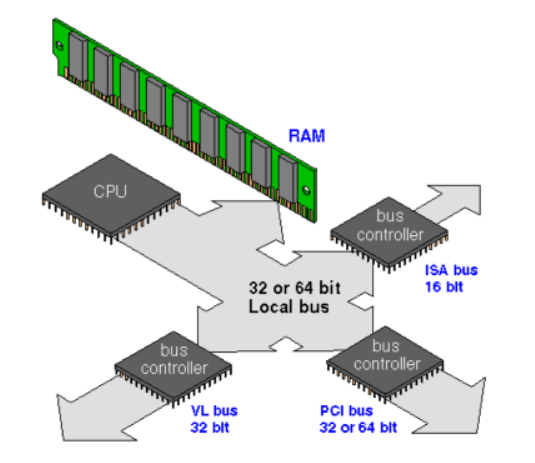Las tarjetas de controlador periférico se conectan a las ranuras del bus local. 3.1.3 Puertas de Entrada Salida E/S Un puerto de E/S es un enchufe en una computadora al que se conecta un cable. El puerto conecta la CPU a un dispositivo periférico a través de una interfaz de hardware o a la red a través de una interfaz de red. En otras palabras, un puerto de E/S es un punto de conexión que actúa como interfaz entre la computadora y dispositivos externos como mouse, impresora, módem, etc. Estos son de dos tipos: 1. Puerto interno: conecta la placa base a dispositivos internos como unidad de disco duro, unidad de CD, módem interno, etc. 2. Puerto externo: conecta la placa base a dispositivos externos como módem, mouse, impresora, unidades flash, etc. Puerto serial: los puertos seriales transmiten datos secuencialmente un bit a la vez. Por lo tanto, solo necesitan un cable para transmitir 8 bits. Sin embargo, también los hace más lentos. Los puertos serie suelen ser conectores macho de 9 o 25 pines. También se conocen como puertos COM (comunicación) o puertos RS323C. Puerto paralelo: los puertos paralelos pueden enviar o recibir 8 bits o 1 byte a la vez. Los puertos paralelos vienen en forma de pines hembra de 25 pines y se utilizan para conectar impresoras, escáneres, unidades de disco duro externas, etc. Puerto USB: USB son las siglas de Universal Serial Bus. Es el estándar de la industria para la conexión de datos digitales de corta distancia. El puerto USB es un puerto estandarizado para conectar una variedad de dispositivos como impresora, cámara, teclado, altavoz, etc. Puerto PS/2: PS/2 son las siglas de Personal System/2. Es un puerto estándar hembra de 6 pines que se conecta al cable mini-DIN macho. IBM introdujo PS/2 para conectar el mouse y el teclado a las computadoras personales. Este puerto ahora está casi obsoleto, aunque algunos sistemas compatibles con IBM pueden tener este puerto. Puerto de infrarrojos: el puerto de infrarrojos es un puerto que permite el intercambio inalámbrico de datos en un radio de 10 m. Dos dispositivos que tienen puertos infrarrojos se colocan uno frente al otro para que los haces de luces infrarrojas se puedan utilizar para compartir datos. Puerto Bluetooth: Bluetooth es una especificación de telecomunicaciones que facilita la conexión inalámbrica entre teléfonos, computadoras y otros dispositivos digitales a través de una conexión inalámbrica de corto alcance. El puerto Bluetooth permite la sincronización entre dispositivos habilitados para Bluetooth. Puerto FireWire: FireWire es el estándar de interfaz de Apple Computer para permitir la comunicación de alta velocidad mediante bus serie. También se llama IEEE 1394 y se usa principalmente para dispositivos de audio y video como videocámaras digitales.
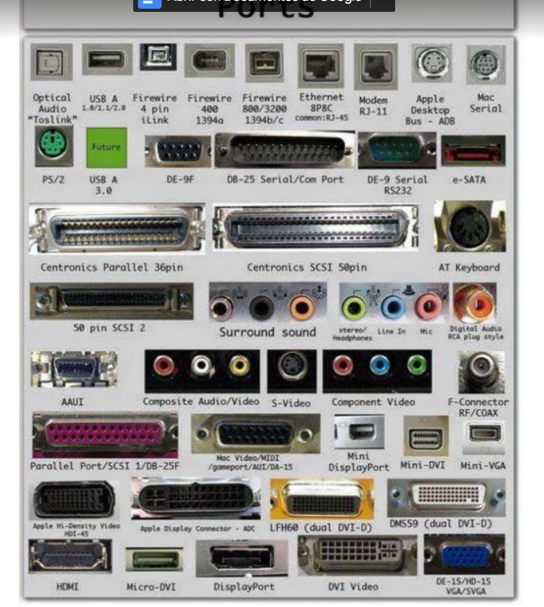3.1.4 Controlador de Interrupciones. El controlador de interrupciones es un módulo que tiene por función gestionar las interrupciones de entrada/salida para el procesador. Esto ahorra diseñar lógica y añadir patitas al procesador. También proporciona flexibilidad porque permite idealmente, gestionar un número ilimitado señales de interrupción (favoreciendo la expansión del sistema de entrada/salida). El controlador recibe el conjunto de señales de interrupción procedentes de los dispositivos, toma la decisión de cuál es la más prioritaria, y envía una única señal al procesador. La respuesta del procesador es transmitida al dispositivo y el propio controlador se encarga de depositar en el bus el vector de la interrupción. En un sistema basado en la familia de procesadores 8086, esta labor la realiza el chip 8259. Este chip admite hasta 8 señales de interrupción, pero también admite ser configurado en cascada (sus entradas proceden a su vez de otro controlador) de modo que un conjunto de controladores 8259 pueden gestionar hasta un máximo de 8 x 8 señales de interrupción procedentes de otros tantos dispositivos de entrada/salida. Ciclo de reconocimiento de interrupción. 1. Tras la activación de una línea IR, el controlador activa la salida INTR señalándole a la CPU la existencia de una interrupción activada. 2. Al recibir la señal, el procesador da un pulso en su salida INTA indicando que comienza un ciclo de reconocimiento de interrupción. 3. Al recibir el controlador el pulso por su entrada INTA comienza a arbitrar las interrupciones recibidas y selecciona la más prioritaria. 4. Se emite un segundo pulso por la línea INTA del procesador (o controlador de bus) que utiliza el controlador para depositar en el bus el vector correspondiente a la interrupción de mayor prioridad. 5. El procesador obtiene la dirección de la rutina de interrupción a partir de este dato y salta a ella. Almacena el registro de flags y la dirección de retorno, deshabilita las interrupciones y comienza a ejecutar la rutina.
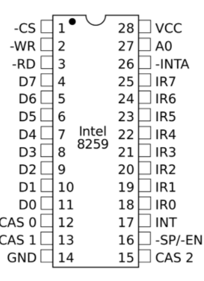pines del controlador programable de interrupciones Intel 8259. 3.1.5 Controlador de Acceso Directo a Memoria (DMA). El mecanismo de acceso directo a memoria está controlado por un chip específico, el DMAC ("DMA Controller"), que permite realizar estos intercambios sin apenas intervención del procesador. En los XT estaba integrado en un chip 8237A que proporcionaba 4 canales de 8 bits (puede mover solo 1 Byte cada vez); sus direcciones de puerto son 000–00Fh. Posteriormente en los AT se instalaron dos de estos integrados y las correspondientes líneas auxiliares en el bus de control. En contra de lo que podría parecer, el resultado no fue disponer de 8 canales, porque el segundo controlador se colgó en “Cascada” de la línea 4 del primero. Los canales del segundo DMAC está asignado a las direcciones 0C0–0DFh y son de 16 bits. Pueden mover 2 Bytes (de posiciones contiguas) cada vez. Cada canal tiene asignada una prioridad para el caso de recibirse simultáneamente varias peticiones (los números más bajos tienen prioridad más alta). Pueden ser utilizados por cualquier dispositivo que los necesite (suponiendo naturalmente que esté diseñado para soportar este modo de operación). Cada sistema los asigna de forma arbitraria, pero hay algunos cuya asignación es estándar.
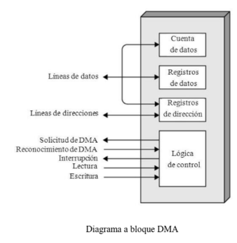Diagrama a bloque DMA 3.1.6 Circuitos de temporización. El circuito electrónico que más se utiliza tanto en la industria como en circuitería comercial, es el circuito temporizador o de retardo, dentro de la categoría de temporizadores, cabe destacar el más económico y también menos preciso consistente en una resistencia y un condensador, a partir de aquí se puede contar con un sinfín de opciones. Cuando necesitamos un temporizador, lo primero que debemos considerar es la necesidad de precisión en el tiempo, base muy importante para determinar los elementos que vamos a utilizar en su concepción y diseño. Un temporizador básicamente consiste en un elemento que se activa o desactiva después de un tiempo preestablecido. De esta manera podemos determinar el parámetro relacionado con el tiempo que ha de transcurrir para que el circuito susceptible de temporizarse, se detenga o empiece a funcionar o simplemente cierre un contacto o lo abra. Se encuentra en la placa base de la PC y que es capaz de mantener una cuenta de tiempo basada en el reloj de la computadora. Puede usarse para calcular el intervalo entre dos mediciones de tiempo o para generar pausas. Este chip tiene la capacidad de realizar diferentes funciones de conteo. Es útil para medir el tiempo que dura cierto proceso o para mantener actualizadas la hora del día y la fecha si se deja la PC conectada y encendida.
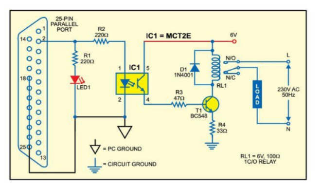Circuito de temporización (puerto paralelo). 3.1.7 Circuitos de Control. Es una red secuencial que acepta un código que define la operación que se va a ejecutar y luego prosigue a través de una secuencia de estados, generando una correspondiente secuencia de señales control. Estas señales de control incluyen el control de lectura-escritura y señales de dirección de memoria válida en el bus de control del sistema. Otras señales generadas por el controlador se conectan a la ALU y a los registros internos del procesador para regular el flujo de información en el procesador y desde los buses de dirección y de datos del sistema.

Circuito controlador del ventilador. 3.1.8 Controladores de video La tarjeta de video, (también llamada controlador de video), es un componente electrónico requerido para generar una señal de video que se manda a una pantalla de video por medio de un cable. La tarjeta de video se encuentra normalmente en la placa de sistema de la computadora o en una placa de expansión. La tarjeta gráfica reúne toda la información que debe visualizarse en pantalla y actúa como interfaz entre el procesador y el monitor; la información es enviada a éste por la placa luego de haberla recibido a través del sistema de buses. Una tarjeta gráfica se compone, básicamente, de un controlador de video, de la memoria de pantalla o RAM video, y el generador de caracteres, y en la actualidad también poseen un acelerador de gráficos. El controlador de video va leyendo a intervalos la información almacenada en la RAM video y la transfiere al monitor en forma de señal de video; el número de veces por segundo que el contenido de la RAM video es leído y transmitido al monitor en forma de señal de video se conoce como frecuencia de refresco de la pantalla.
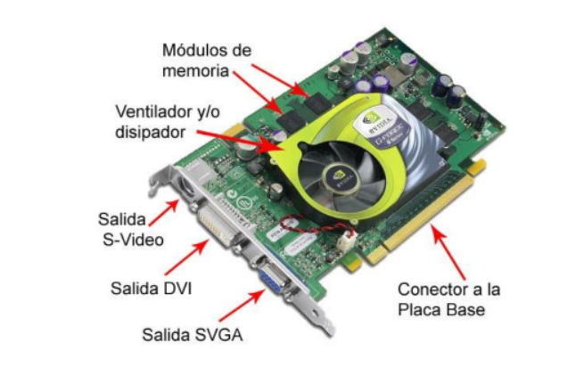Tipos de placas de videos. Adaptador de Pantalla Monocromo (MDA): los primeros PC solo visualizaban textos. El MDA contaba con 4KB de memoria de video RAM que le permitía mostrar 25 líneas de 80 caracteres cada una con una resolución de 14x9 puntos por carácter. Tarjeta gráfica Hércules: con esta tarjeta se podía visualizar gráficos y textos simultáneamente. En modo texto, soportaba una resolución de 80x25 puntos. En tanto que en los gráficos lo hacía con 720x350 puntos, dicha tarjeta servía sólo para gráficos de un solo color. La tarjeta Hércules tenía una capacidad total de 64k de memoria video RAM. Poseía una frecuencia de refresco de la pantalla de 50HZ. Color Graphics Adapter (CGA): la CGA utiliza el mismo chip que la Hércules y aporta resoluciones y colores distintos. Los tres colores primarios se combinan digitalmente formando un máximo de ocho colores distintos. La resolución varía considerablemente según el modo de gráficos que se esté utilizando.
La tarjeta EGA: Enchanced Graphics Adapter (EGA). Se trata de una tarjeta gráfica superior a la CGA. En el modo texto ofrece una resolución de 14x18 puntos y en el modo gráfico dos resoluciones diferentes de 640x200 y 640x350 a 4 bits, lo que da como resultado una paleta de 16 colores, siempre y cuando la tarjeta esté equipada con 256KB de memoria de video RAM. La tarjeta VGA: la Video Graphics Adapter (VGA) significó la aparición de un nuevo estándar del mercado. Esta tarjeta ofrece una paleta de 256 colores, dando como resultado imágenes de colores mucho más vivos. Las primeras VGA contaban con 256KB de memoria y solo podían alcanzar una resolución de 320x200 puntos con la cantidad de colores mencionados anteriormente. La tarjeta SVGA: la tarjeta SVGA (Super Video Graphics Adapter) contiene conjuntos de chips de uso especial, y más memoria, lo que aumenta la cantidad de colores y la resolución. El acelerador gráfico: el acelerador gráfico se encarga de realizar una serie de funciones relacionadas con la presentación de gráficos en la pantalla, que, de otro modo, tendría que realizar el procesador. De esta manera, le quita tareas de encima a este último, y así se puede dedicar casi exclusivamente al proceso de datos. El coprocesador gráfico: posteriormente, para lograr una mayor velocidad se comenzaron a instalar en las tarjetas de video otros circuitos especializados en el proceso de comandos gráficos, llamados coprocesadores gráficos. Se encuentran especializados en la ejecución de una serie de instrucciones específicas de generación de gráficos. Aceleradores gráficos 3D: los gráficos en tres dimensiones son una representación gráfica de una escena o un objeto a lo largo de tres ejes de referencia, X, Y, Z, que marcan el ancho, el alto y la profundidad de ese gráfico. Para manejar un gráfico tridimensional, éste se divide en una serie de puntos o vértices, en forma de coordenadas, que se almacenan en la memoria RAM.
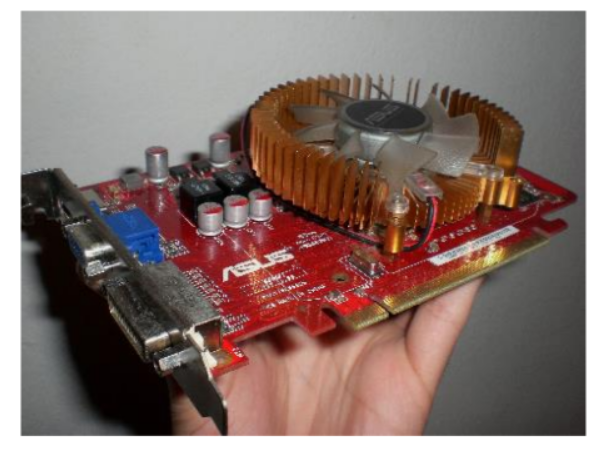